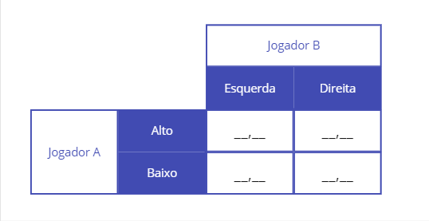
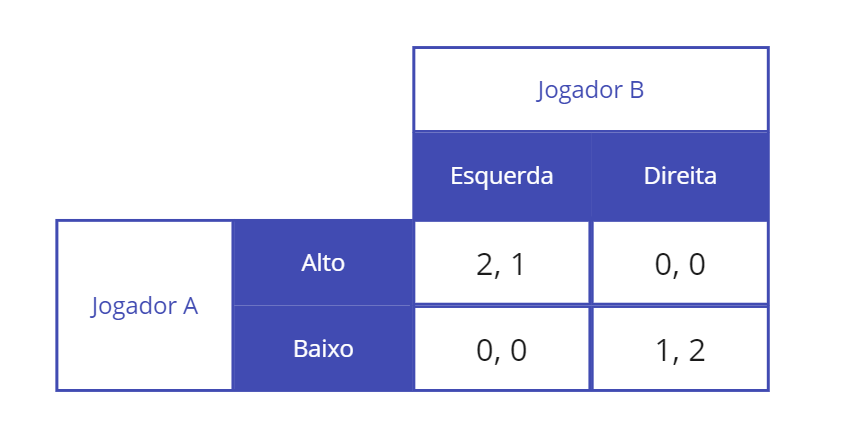
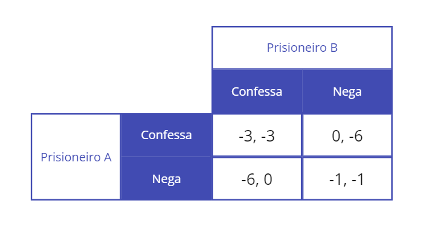
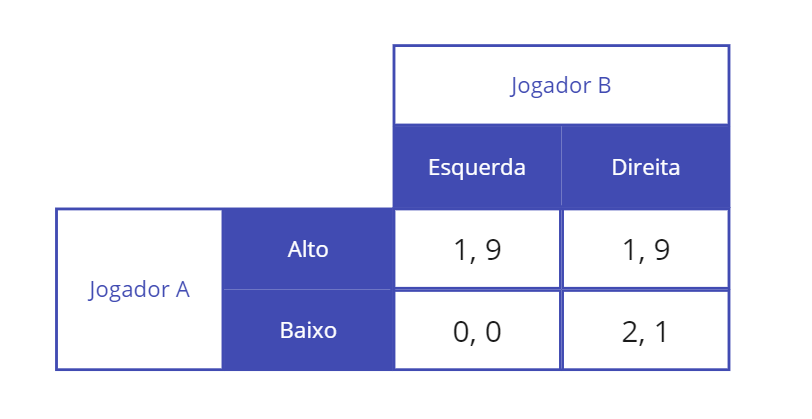
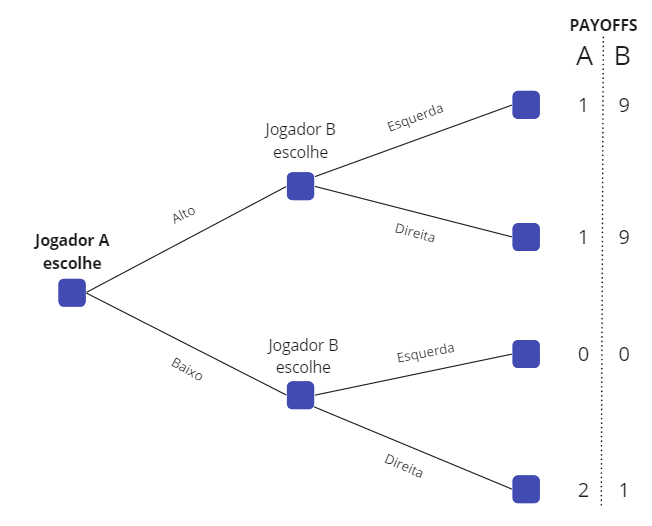
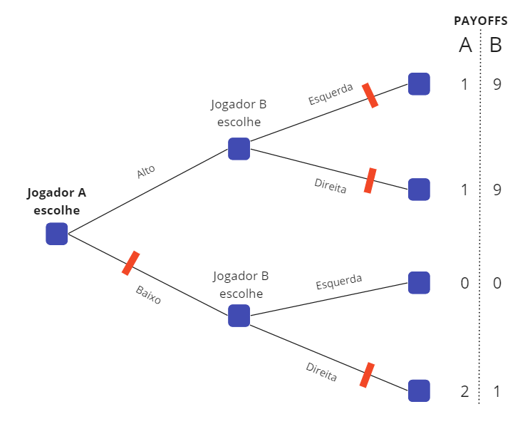
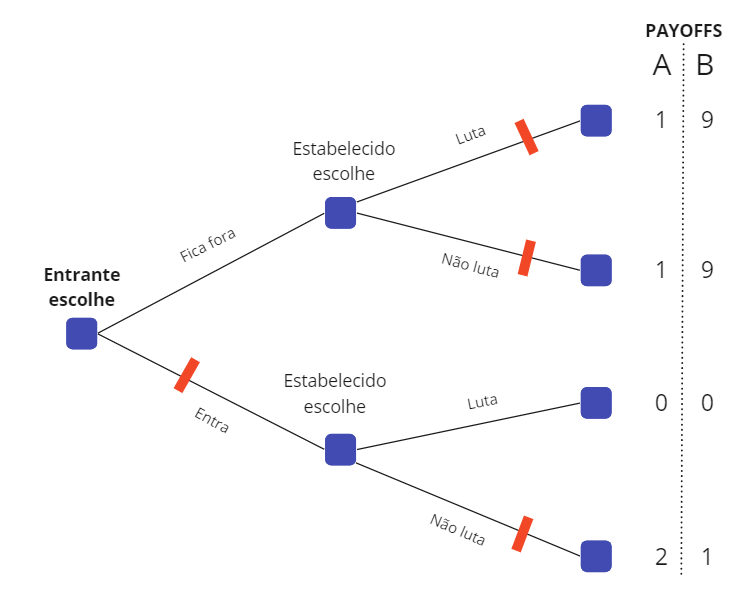
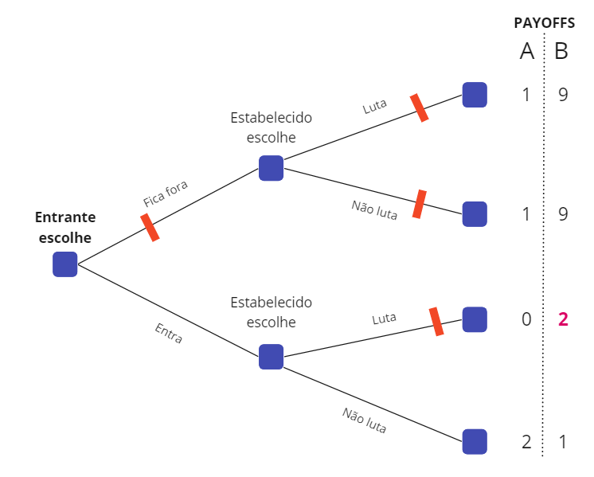

Microeconomia
Conceitos Básicos de Teoria dos Jogos
Michel Szklo
FGV EAESP
26 de Agosto de 2023
Introdução
O que é a Teoria dos Jogos?
- A Teoria dos Jogos é um campo multidisciplinar que combina matemática e economia para analisar a tomada de decisões estratégicas entre indivíduos racionais.
- Ela revela a interação estratégica entre diferentes atores, oferecendo uma lente para decifrar cenários complexos envolvendo competição, cooperação e negociação.
- Seu surgimento está associado ao trabalho do matemático John Nash, do economista John von Neumann e do matemático Oskar Morgenstern.
O Jogo
O Jogo
- Um jogo é qualquer situação na qual os jogadores (os participantes) tomam decisões estratégicas (decisões que levam em conta as atitudes dos outros).
- É uma forma simplificada de representar situações reais em atores interagem e tomam decisões.
Elementos
- Jogadores: Imagine-os como os participantes em um cenário, cada um tentando maximizar seus próprios resultados.
- Estratégias: Elas representam o conjunto de escolhas à disposição dos jogadores. Estratégias moldam as interações e resultados do jogo.
- Recompensas (payoff): incorporam as recompensas ou custos associados aos diferentes resultados do jogo.
Elementos
- Regras: Cada jogo tem um conjunto de regras que definem as escolhas disponíveis, interações e restrições.
- Informação: Diz respeito ao que cada jogador sabe sobre as estratégias e preferências dos outros. Informação incompleta ou assimétrica pode impactar significativamente as decisões.
Tipos de Jogos
- Jogos de Decisões Simultâneas
- Esta categoria captura cenários em que os jogadores devem tomar suas decisões simultaneamente, sem conhecimento das escolhas de seus pares.
- Exemplo: O icônico Dilema do Prisioneiro, onde dois suspeitos decidem independentemente se cooperam ou traem.
- Jogos de Decisões Sequenciais
- Jogos sequenciais ocorrem ao longo de várias rodadas, com cada jogador respondendo a decisões anteriores.
- Considere o xadrez como um exemplo clássico. Os jogadores reagem a movimentos anteriores, criando camadas intricadas de estratégia e contraestratégia.
Tipos de Jogos
- Jogos Estáticos
- Em jogos estáticos, todos os jogadores fazem suas escolhas simultaneamente, como uma foto em um determinado momento.
- Pense nisso como capturar um único momento de tomada de decisão. O Dilema do Casal, onde um casal decide qual filme assistir, é uma ilustração relevante.
- Jogos Dinâmicos
- Jogos dinâmicos englobam cenários em que as decisões se desdobram ao longo do tempo, e escolhas anteriores impactam movimentos subsequentes.
- Uma ilustração é o Modelo de Duopólio de Cournot na economia, onde empresas ajustam suas quantidades de produção em várias rodadas, considerando as ações anteriores de seus rivais.
A Matriz de Payoffs

A Matriz de Payoffs
Principais Conceitos
Estratégia Dominante
- Estratégia ótima de um jogador que não se altera em função da estratégia adotada pelo seu oponente.
- Qual é a melhor ação de um jogador para cada ação possível de seu oponente?
- Se a melhor ação for sempre a mesma, independendo do que o outro faço, essa é uma estratégia dominante.
Equilíbrio de Nash
- O Equilíbrio de Nash é uma situação em que nenhum jogador pode ganhar ao mudar unilateralmente sua estratégia, assumindo que as estratégias dos outros jogadores permaneçam inalteradas.
- Nesse equilíbrio, todos os jogadores escolhem a estratégia que lhes oferece o maior payoff em função daquilo que seus oponentes estão fazendo.
- O Equilíbrio de Nash nem sempre representa o equilíbrio ótimo (pareto).

O Dilema dos Prisioneiros
O que é o Dilema dos Prisioneiros?
- O Dilema do Prisioneiro pinta uma imagem do conflito entre a racionalidade individual e coletiva.
- O Dilema surge quando ambos os suspeitos de um crime, temendo o pior resultado possível, acabam escolhendo a estratégia subótima de confessar, levando a resultados subótimos para ambos.
- Se os dois pudessem simplesmente entrar em acordo para não confessar, cada um ficaria menos tempo na prisão.
Matriz de Payoffs do Dilema dos Prisioneiros

Jogos Repetidos
Jogos Repetidos
- Na vida real, empresas competem praticando jogos repetidos: açoes são realizadas repetidas vezese os payoffs recebidos em cada repetição.
- As repetições dos jogos permitem que as empresas desenvolvam uma reputação a respeito do seu próprio comportamento e que estudem o comportamento dos concorrentes.
Dois Postos de Gasolina
- Dois postos de gasolina vendem o mesmo produto e tem o mesmo custo marginal.
- É um mercado oligopolista em que as empresas definem o preço de venda (Bertrand).
- Estratégia “olho por olho, dente por dente”: jogador responde de forma igual às prévias do concorrente, cooperando com aqueles que cooperam e retaliando o que não cooperam.

Equilíbrio em um jogo repetido finitas vezes
- Esse jogo repetido é uma versão de um Dilema do Prisioneiro.
- Chega-se ao mesmo equilíbrio.

Equilíbrio em um jogo repetido infinitas vezes
- Com jogos repetidos infinitas vezes, o comportamento cooperativo (cobrar o preço alto) torna-se a estratégia racional.
- O ganho esperado decorrente da cooperação ultrapassa o ganho advindo de uma guerra de preços.
Jogos Dinâmicos
Jogos Dinâmicos
- Nos jogos dinâmicos, os jogadores tomam suas decisões um após o outro.,
- Há um líder e um seguidor (Modelo de Stackelberg).
- Cada jogador sabe o que o outro escolheu antes de realizar sua escolha.

Forma extensiva do jogo
- A forma extensiva do jogo é representada por uma árvore de decisão,
- O jogo começa com dois ramos representando as possíveis estratégias para o primeiro jogador.
- Em seguida representamos as possíveis estratégias para o segundo jogador.

Método de Resolução
- Jogos sequenciais podem ser resolvidos diretamente pelo método da indução retroativa, ou seja, de trás pra frente.
- Quem joga antes deve levar em conta que a reação do oponente será baseada no maior payoff possível, após sua escolha.

Um Jogo com Barreira à Entrada
- Supunhamos um mercado com um monopolista que enfrenta a ameaça de entrada de outra empresa.
- Podemos representar essa situação pelo jogo anterior.
- O Jogador A seria o entrante e o Jogador B seria o monopolista.

Um Jogo com Barreira à Entrada
- Supunhamos que a empresa monopolista possa comprar uma capacidade de produção extra permitindo aumentar a produção ao mesmo custo marginal

Aplicações
Aplicações
- Economia:
- Comportamento de Oligopólio: A teoria dos jogos esclarece como as empresas interagem em mercados competitivos, influenciando decisões de preços e produção
- Leilões: ajuda a analisar diferentes formatos de leilão e estratégias de lances otimizados, em especial first-price sealed-bid auction
- Negociações Trabalhistas: Ela fornece insights sobre negociações salariais, barganha Coletiva, greves e dinâmicas do mercado de trabalho
- Negociações sobre Mudanças Climáticas: Modelar acordos internacionais e estratégias de cooperação para enfrentar desafios globais como as mudanças climáticas.
- Ciência Política:
- Comportamento de Votação: A teoria dos jogos modela estratégias de eleitores, posicionamento de candidatos e o impacto de mensagens de campanha.
- Relações Internacionais: Ela explora a resolução de conflitos, negociações e a dinâmica de tratados internacionais.
- Administração:
- Negociações Empresariais: Aplicação da teoria dos jogos para entender dinâmicas competitivas, estratégias de precificação e negociações em ambientes corporativos.
- Outros:
- Esportes e Jogos Competitivos: Analisar considerações estratégicas em esportes, onde táticas e antecipação dos movimentos dos adversários desempenham um papel crítico.